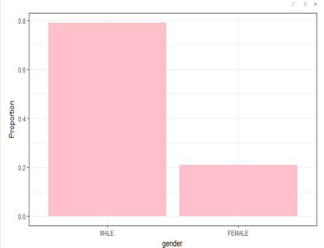
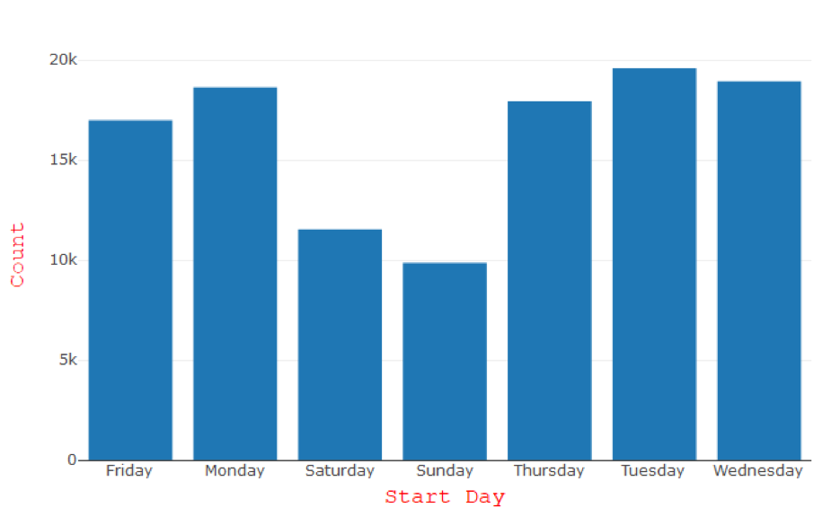
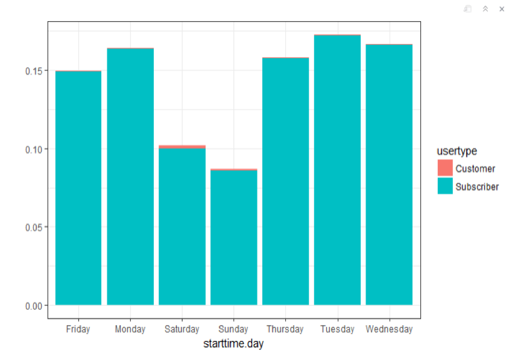
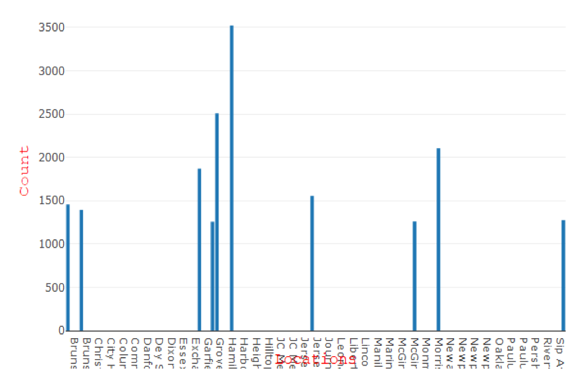

Primary aim of the project was to improve the utilization of Citibike in Jersey City by studying the data of customers in Jersey City. We wanted to address basic questions like Which stations has maximum usage? Which age group are maximum users of city bike? Which day of the week has maximum city bike users? and based on questions like these derive which stations should be improvised.
I was responsible for identifying Categorical Values for the data which were to derive important conclusions in analysis, also was responsible for writing the code in R language to derive the charts and other calculations.
In this study, we consider Jersey bike sharing data. The details of every rides by a bike in the bike sharing system is recorded by the docking stations, cleansed, centralized, and made available to the public. Our particular focus for this study is all rides for the month October to December 2017 and January to March 2018 was taken. This additional information, mainly gender and date of birth is captured at the time of registration by the subscribers and is provided by the subscriber.
After cleaning of data we wanted to explore the relation between the age of the rider and the ride duration in minutes, which were both are numerical
The other categorical values which were critical were start time, start hours, stop time of the trip, start time of the day, start station name, start station latitude, start station longitude, end.station.name, end station latitude, end station longitude and user type
After cleaning of data we carried out exploratory analysis, first we calculated the age of the user’s using citibike and found user’s with age of 32 had used most of the rides.We also analyzed which age group uses the more number of city bikes in Jersey City.
Next, we calculated which gender uses more city bike. And the results indicated that Male were more into Citi bike than female. In particular, over 79% of users were men, about 20% were women.
Next, we calculated maximum number of trips taken on which day. Most number of trip were taken on Tuesday, followed by Wednesday and Monday. Trips during the weekend were much less than during the week days.
Interestingly, the customer users have slightly more usage of citi bike on weekend than on weekdays. It is important to remember that the customer were those who purchase a 24hours or 7-day pass and Subscriber were annual membership. It seems that the customer were tourist people which uses citi bike on Weekend to visit some places.
Finally, it was observed that there were more number of trips from Hamilton park station to Grove Station.
Upon further analysis we found out the reason for increase in use of bikes between Hamilton and Grove was due to peak office hours and Grove PATH station, a easy transport to reach New York for office. Hence these two stations should and balanced by adding new citi bike stations with larger bike capacities.